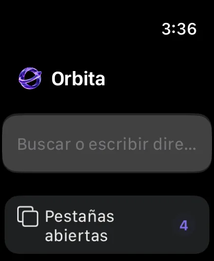
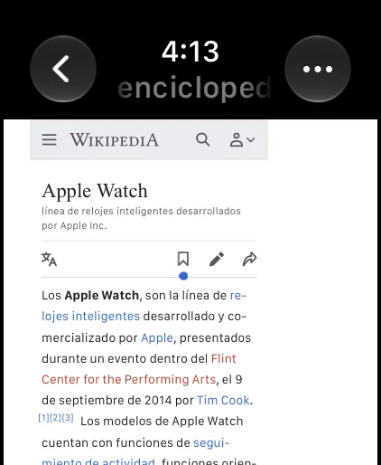
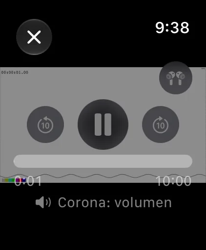
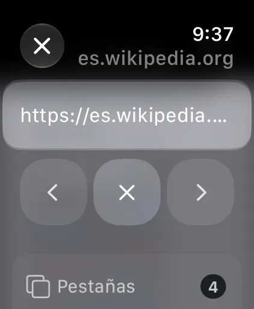
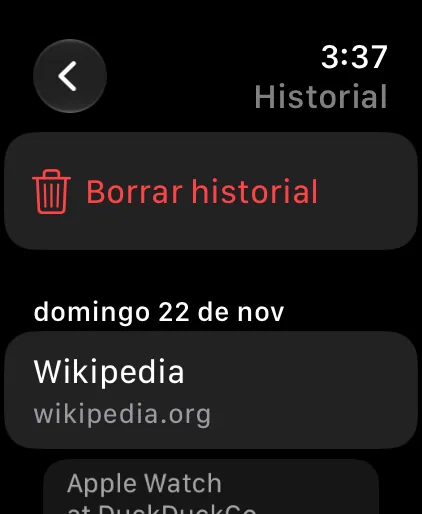
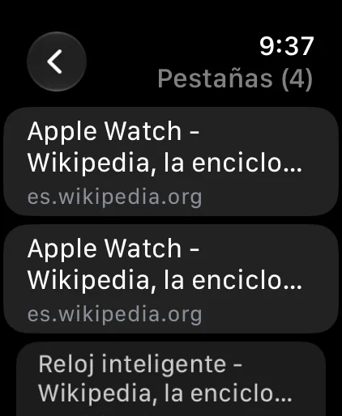
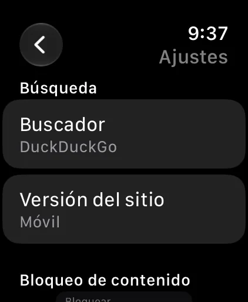
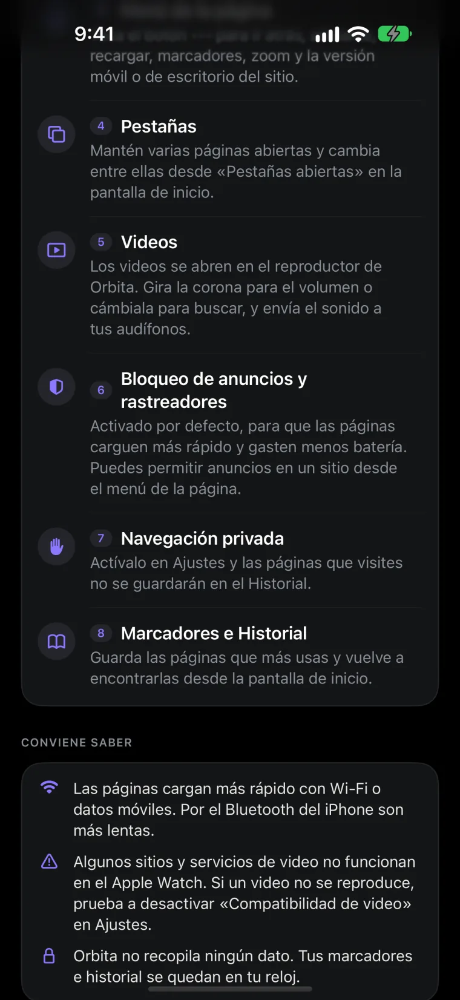
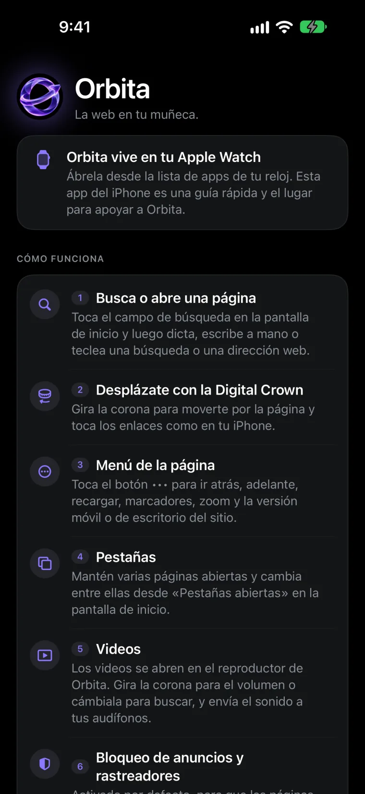
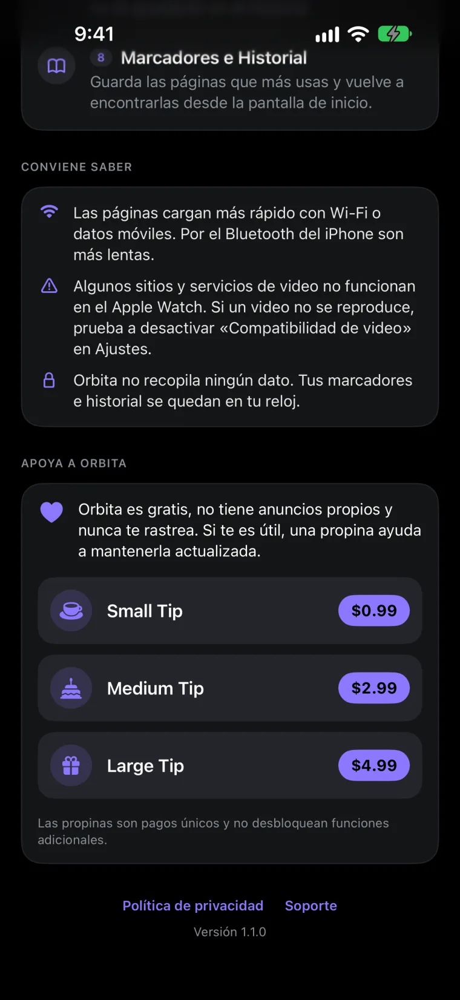

Pestañas
Ten varias páginas abiertas y cambia entre ellas. Siguen abiertas aunque cierres la app, y las que no usas se suspenden para ahorrar memoria.
Navegador web para Apple Watch
Busca, lee y mira videos directo desde tu Apple Watch. Sin anuncios, sin rastreadores y sin sacar el iPhone.
Gratis · Apple Watch con watchOS 10 o posterior · Propinas opcionales, sin anuncios propios




Bloqueo integrado
El bloqueo ocurre dentro del motor web, antes de que algo se descargue. Las páginas cargan más rápido y tu batería dura más.

Videos
Orbita encuentra los videos de cada página y los abre en el reproductor nativo del reloj.
Para todos los días
Ten varias páginas abiertas y cambia entre ellas. Siguen abiertas aunque cierres la app, y las que no usas se suspenden para ahorrar memoria.
Vuelve a lo que leíste y guarda los sitios que más usas. Borra el historial cuando quieras.
Dicta, usa Garabatear o el teclado. Di una dirección como «wikipedia punto org». Elige DuckDuckGo, Google, Bing o Ecosia.
Pide a los sitios su versión móvil, de escritorio o para reloj, desde Ajustes o el menú de la página.
Agranda o reduce el texto desde el menú de la página.
Se detienen, y el menú de la página te dice cuántas.


Privacidad
Orbita no tiene cuentas, analíticas ni anuncios propios.

Incluye app de iPhone
Orbita vive en tu Apple Watch. La app de iPhone explica cómo usarla en 8 pasos y es donde puedes dejar una propina opcional.



Las propinas son pagos únicos y no desbloquean funciones adicionales.
Gratis en la App Store
Las páginas cargan más rápido con Wi‑Fi o datos móviles. Por el Bluetooth del iPhone son más lentas. Algunos sitios y servicios de video no funcionan en el Apple Watch.